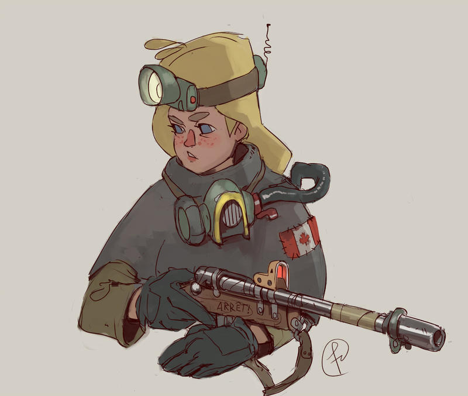
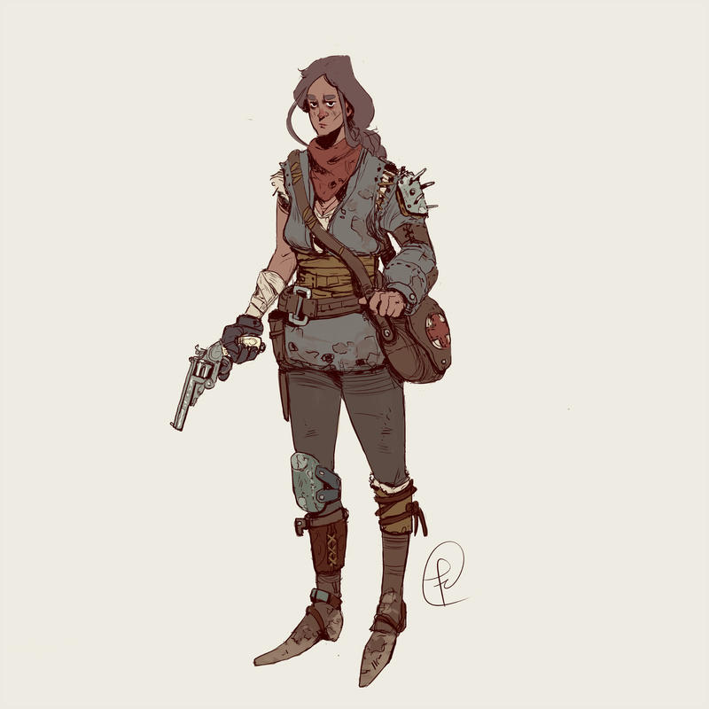
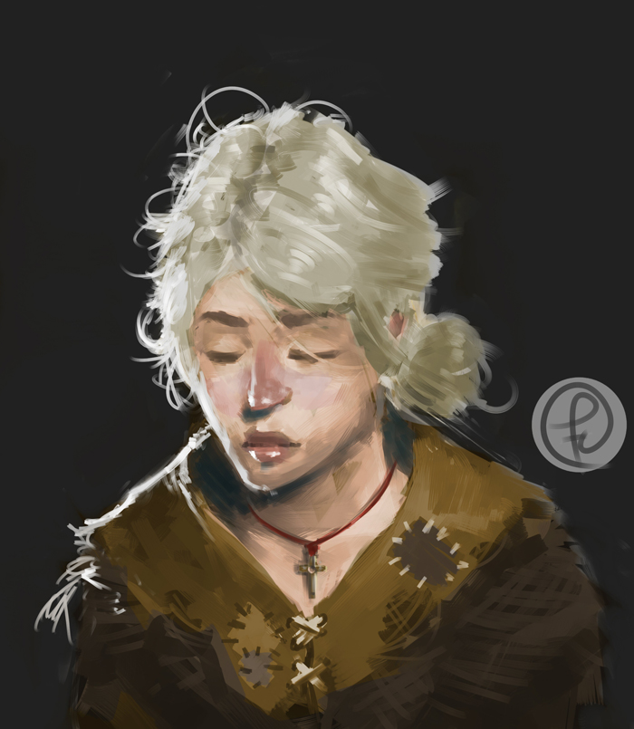
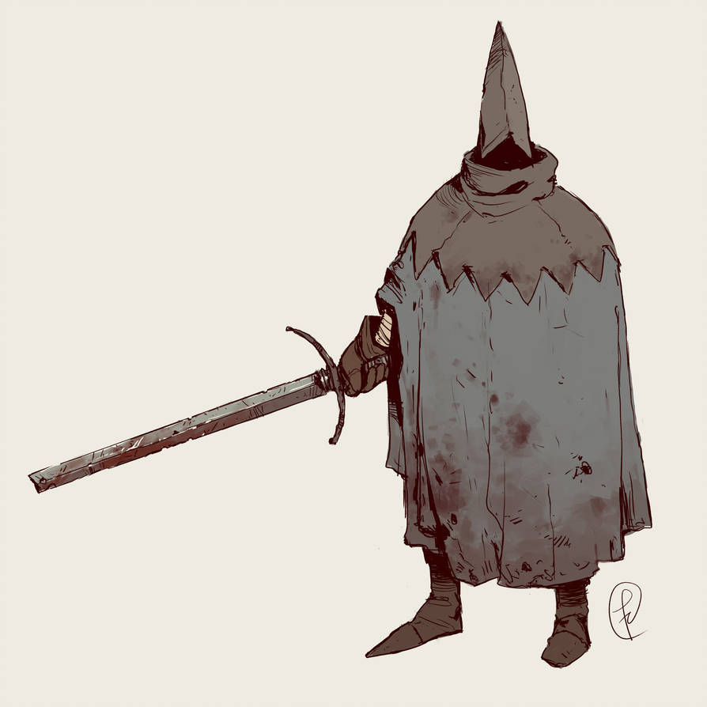
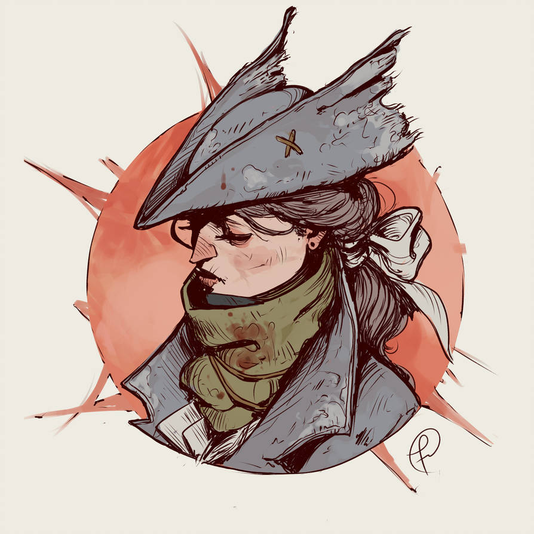
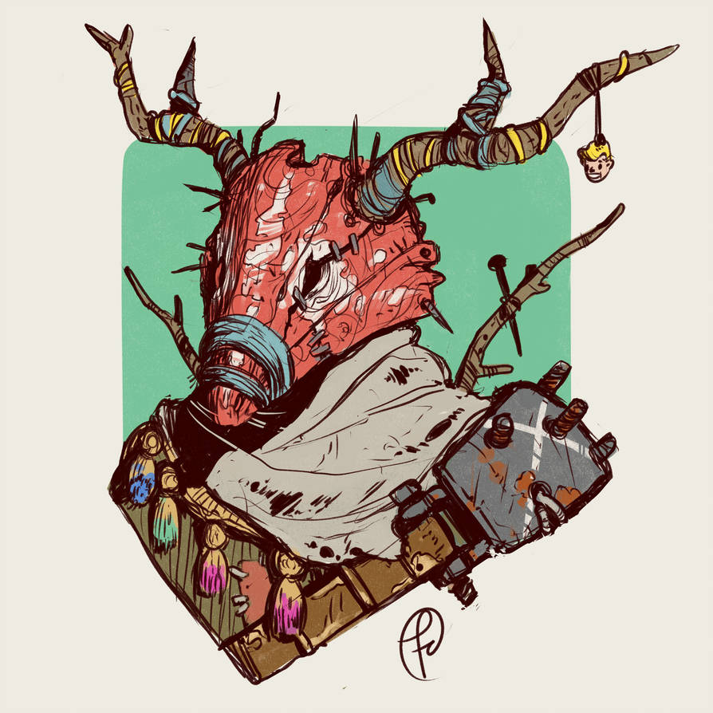

Sous terre
Ceci est un jeu de rôle d’aventures et d’exploration avec un meneur et 3 joueurs. L’histoire progresse semi-aléatoirement, et l’accent est mis sur des énigmes-puzzles et l’inventivité des PJs pour résoudre les obstacles.
Le jeu est conçu pour des sessions courtes mais également pour être éminément rejouable, chaque partie permettant aux joueurs de connaître un peu mieux l’Agartha, ses pièges et ses trésors.
Il nécessite 2 dés à 6 faces et quelques pions quelconques, et seulement 10min de préparation du MJ.


Jeu de rôle ?
Si vous ne connaissez pas encore ce type de jeu, commencez par lire la définition du JdR de la FFJdR ou ce micro-JdR explicatif de Epidiah Ravachol. Voici quelques abréviations employées par la suite :
- MJ
- Meneur de Jeu
- PJ
- Personnage d'un Joueur
- PNJ
- Personnage Non Joueur, tous les autres personnages de l'histoire, incarnés par le MJ
- 1d6
- un dé à six faces
- 1d3
-
lancer d'un dé à six faces :
- sur un
⚀ou un⚁, le résultat est 1 - sur un
⚂ou un⚃, le résultat est 2 - sur un
⚄ou un⚅, le résultat est 3
- sur un
- 1d2
- lancer un dé à six faces → le résultat est 1 si le résultat est impair, 2 sinon
Le monde connu des PJs
Suite à une catastrophe il y a bientôt un siècle, ce qui reste de l’humanité s’est réfugiée sous terre, dans un vaste réseau de tunnels.
+ mention Vril, saison rouge / Pollen & rats… + rumeur Skaven mais personne survécu
+ on y marchande en faisant du troc ou avec de l’or
Agartha = dangereuse zone “instable”, plus profondéùent sous terre, parcourue d’une étrange énergie, le Vril
surface hors de vue -> puits de lumière
Déroulement
- En amont, le MJ définit aléatoire un scénario, ainsi que les PNJs potentiels (10min)
- Durant la partie, les PJs explorent l’Agartha, alternant les phases :
- de progression dans les tunnels
- d’exploration de lieux notables, dans des salles souterraines
Chaque jet de dés des PJs active la table narrative du MJ.
Règle d’or
Lorsque le résultat d’un jet de dé dans une table ne plait pas au MJ, ne pas hésiter le relancer, ou à directement choisir un autre résultat !
Scénario
Le « fil rouge » d’une partie de Sous terre est toujours définit aléatoirement, en combinant :
- des PNJs pré-générés aléatoirement
- un objectif principal des PJs
- un rebondissement majeur
- une fin
Suivez les instructions des sections correspondantes ci-dessous, et reportez sur une feuille dédiée les éléments de votre scénario.
PNJs
|  |  |
|---|---|
 |
 |
|  |  |
Chaque PNJ doit représenter pour les joueurs un risque et une opportunité. Ils peuvent se révéler hostiles immédiatement ou les trahir plus tard, mais aussi être une aide précieuse.
Énoncez cette règle explicitement à vos joueurs :
Si les PJs trouvent le bon levier, chaque PNJ peut devenir un allié.
Durant une partie de Sous terre, les PJs vont être amenés à rencontrer entre 1 et 4 PNJs. Avant la partie, le MJ définit donc 4 PNJs aléatoirement, selon ces règles :
- Nom & Illustration : lancez 2d6 dans cette table puis choisissez une des images 6 ci-dessus
| Johanna | Hortense | Gina | |
| Lisette | Mathilde | Agnès | |
| Eloïse | Cora | Joachim | |
| Douglas | Friedrick | Anselme | |
| Gaël | Yann | Darius | |
| Joachim | Abel | Ghislain |
-
Occupation (fournir bonus aux PJs si PNJ les accompagne):
⚀trappeuse solitaire,⚁cartographe,⚂archéologue chercheuse de reliques,⚃herboriste ceuilleuse,⚄perdue,⚅tueuse de Skavens. -
Objectif :
- s’est perdu, souhaite sortir de ce labyrinthe
- trouver une monnaie d’échange auprès des Skavens contre sa fille (tir
- trouver un artefact -> 1d2 : pour l’acquérir / pour le détruire
Afin de rendre vos personnages plus réalistes, astreignez-vous à suivre cette règle :
Un PNJ ne révèle jamais spontanément ni explicitement son objectif.
Ce serait se rendre bien trop vulnérable. Non, il couvrira toujours initialement ses véritables intentions. Qu’il propose un marché aux PJs, qu’il leur révéle des informations, qu’il leur raconte d’effrayantes histoires ou simplement qu’il les chasse colériquement, ses paroles et actions suffiront à révéler aux PJs attentifs ce qu’il cherche à obtenir.
- Attitude initiale :
- folie -> pair / impair -> douce / dangereuse
- bienveillant
- hostile voir agressif
- les piège pour les voler
- Atout :
- connait les tunnels comme sa poche, sait se rendre dans n’importe quel lieu
- possède une relique (à tirer aléatoirement dans la table correspondante)
- possède une arme très puissante
- Possessions : l’arme présente sur l’illustration s’il y en a, plus 2 objets tirés dans cette table :
- bla
- Levier pour les PJs :
- est blessé et recherche des soins
-
Est terrifié par :
-
Particularité :
- ne peut pas communiquer : quasi-muet, ne s’exprime que par onomatopées primales
- commence à se transformer en Skaven
-
Peut orienter les PJs vers 1 indice :
-
Si la conversation tourne court avec les PJs, que ceux-ci ne savent pas quoi dire :
-
Connaissance de l’environnement : 1 move qu’il connait et quel les PJs pourront apprendre en l’observant (ex: gousses de pollen vert pour ralentir chutes)
Objectif des PJs
La nuit dernière, Damian, leur chef-sorcier, est mort de blessures infligés lors d’une attaque de Skavens. Avant de rendre son dernier souffle, son dernier commandement fut de vous envoyer dans l’Agartha pour une mission :
- retrouver Erik, son fils, qui n’est pas encore revenu d’une expédition là-bas, avant de déplacer la communauté
- une relique suffisament puisant pour les aider à repousser les Skavens
- vous infiltrer derrière les lignes ennemis et semer la panique chez les Skavens
- trouver une source de nourriture près de laquelle votre communauté pourrait s’installer
- traquer le Skaven qui l’a mortellement blessé, et récupérer le collier de pouvoir qu’il lui a volé
- placer son corps embaumé dans la crypte de ses ancêtres, sans quoi il risque de revenir d’entre les morts
+ inclure 1 PNJ systématiquement dans scénario
+ définir système de progression : combien de lieux avant d’atteindre objectif ?
Rebondissement majeur
Fin
-> chacun cite sa scène / tirade préférée ?
Début de partie
En début de partie, les joueurs se répartissent les 3 personnages, en complétant les questions sur le feuille & en suivant les instructions relatives à leur capacité spéciale, puis choisissent 4 talents dans la liste ci-dessous.
Le sub-cartographe
Nom
Qui était Damian pour vous ?
Autre question personnelle ?
Talents
Règles spéciales
gère la carte + sait comment réagir aux dangers
+1 Talent : s’orienter 7-9 -> 1 au choix: 10+ -> 2 au choix:
- progression rapide
- rajouter tunnel entre 2 lieux distants de max 2 tunnels
- choix type de tunnel
+ soigneur ?
L’archéo-magasinier

Nom
Qui était Damian pour vous ?
Autre question personnelle ?
Talents
Règles spéciales
gère inventaire / réparti équipement entre joueurs / comprend reliques
- 1 Talent : connaissance des reliques Si étudie indices: 10+ => x2 +1 nature de relique, +1 effet OU 1 lien
-> à revoir
+ a un fusil (d’après illus) + 1-2 indices table 66 dès le départ ? + 1 relique de départ ?
Seul à savoir lire & écrire
Le tempo-magus
Nom
Qui était Damian pour vous ?
Autre question personnelle ?
Talents
Règles spéciales
la cordée, précieuse corde tressée héritée de son maître
un mot par pouvoir
1 utilisation (globale) d’un ces pouvoirs par 30min de jeu (heure d’utilisation notée sur feuille PJ), et pas 2x de suite le même
- déflagration Vril : bourasque électrique capable de projeter plusieurs adversaires en l’air
- mur de métal : fait sortir 4d6 barres de fer du sol
- retour en arrière dans le temps avec tous ceux encordés (au moment de l’utilisation) cf. FAQ en restant sur place -> paradoxe
Liste de Talents
- observer
- bricoler
- se cacher
- escalader
- combattre
- intimider
- soigner
- pister
- sprinter / parkour
- être fort
- tromper
Système
2d6 +1/Talent +1/Équipement
Lorsqu’un PJ tente de réaliser une action risquée, le joueur annonce quels Talents et équipements vont l’aider dans cette situation. Il lance ensuite deux dés à six faces auquel il additionne le nombre de ces compétences & objets. Le MJ peut refuser certains Talents / équipements s’il considère qu’ils n’aideront pas beaucoup le Pj dans ce contexte.
Le MJ interprête le résultat du jet ainsi, et décrit la scène qui s’ensuit :
- 6 ou moins : c’est un échec !
- de 7 à 9, le MJ choisit :
- soit d’interprêter directement le résultat comme une réussite partielle, ou entrainant des complication : « oui, mais… »
- soit de proposer un choix au PJ → l’action ne sera réussie que s’il accepte un « coût » définit par le MJ : faire du bruit, casser quelque chose, être blessé…
- 10 ou plus : c’est une réussite parfaite !
Exploration
Section confidentielle ! À partir d’ici seul le MJ peut continuer à lire !
Faune & flore
créatures très vulnérables mais capapables d’inverser la gravité
Effet du gaz Pollen vert -> catathonie + attire fourmis qui ramènent à la fourmilière
Gousses de gaz bleu / vert -> les petites bleues peuvent permettre de ralentir une chute par exemple
Tunnels
- cascade
Lieux étranges
Quand il s’agit de déterminer un nouveau lieu, lancez 1d6 et reportez vous aux sections numérotées ci-dessous. Si le lieu correspondant a déjà été découvert par les PJs, sélectionnez celui qui suit directement, et ainsi de suite.
À chaque lieu associer :
- 1 trouvaille -> cf. table
- idem
- idem
- une relique -> cf. table
- présence Skaven :
⚀,⚁=,⚂,⚃,⚄,⚅. - un PNJ -> cf. table
1d6 tunnel types & écosystèmes :
- terre : humide, racines, -> eau
- pavés & moellons : colonnes, arches, résonne -> +1 table mysticisme
- roche : escarpé, glissant, -> +1 table rencontre
- béton : poussière, armature d’acier visible, -> -1 table anomalies Vril
- rails : briques, aclôves, -> pas Skavens
- métal : coursives, escaliers, cables, rembardes… -> pas Pollen
| Nombre de sorties | |
|---|---|
| cul de sac | |
| 1 autre | |
| 2 autres | |
| 3 autres |
1- Le puit sans fond
Puit de lumière dont on ne distingue aucune des ses deux extrémités, et il faut longer le vide pour atteindre les autres tunnels y accédant.
Une des sorties de cette pièce est inaccessible via la corniche qui longe le lieu.
Une pièce invisible existe au milieu du vide
Dans cette pièce il est possible d’indiquer des coordonnées (suite de d6) pour orienter un « canon à tunnel » optique
2- Le cimetière
Avec des croix sur chaque tombe et une chapelle.
3- La serre
En verre, avec une végétation luxuriante à l’intérieur.
4- L’épave d’avion
5- La péniche
Dans un cours d’eau souterrain.
6- Le moulin
Au milieu d’une vigne
7- Le village suspendu
Fixé à la voûte d’une salle, abandonné, on peut y vivre que la gravité soit dans un sens ou l’autre.
8- La Ziggurat
Temple à étages
9- La mer souterraine
Sur chaque plage un rocher porte un symbole : {liste de symboles}
10- La fourmilière
WIP Puzzles & trésors à placer
tunnel en partie effondré dont on apperçoit l’autre côté
chaines auxquelles sont suspendues des lumières / miroirs, à tirer / rompre / auxquelles se balancer
statue animée gardienne d’un lieu
Il existe une salle caché, le tombeau emmuré d’un dieu maudit, loin hors de la carte du sub-cartographe mais directement à l’ouest de la salle…
Nécessite: le pouvoir du bassin B
Bassin A : en trempant sa carte dans ce bassin, le sub-cartographe révèle l’emplacement de TOUS les lieux.
Indices: n° & n°
Bassin B : en trempant sa carte dans ce bassin, le sub-cartographe acquiert la capacité de de tracer des tunnels à la demande entre le lieux !
Indices: n° & n°
Bassin d’eau gorgée de Pollen : tout objet trempé dedans peut flotter dans les airs lorsqu’il est traversé e Vril
Indices: n° & n°
Table narrative
Intro: késako ? fonctionnement dans les grandes lignes
8 directions scénaristiques Pour chacune prévoir un compteur de progression
| Fantômes | Reorg tunnels | Rencontre | |
| Vestiges | Au choix | Saison rouge | |
| Rats & lumière | Danger naturel | Menace Skaven |
Notez que dans cette table les scores les plus élévés, associés en général à des actions réussies des PJs, correspondent à des complications de l’histoire, tandis qu’à l’inverse les plus petits scores entrainent des opportunités.
Au choix => rien OK
Fantômes
Damian
Vestiges :
- indice -> cf. table
- fresque
- cadavre avec loot
- statue
- parchemins
- vitraux
Rats & lumière
- effrayés par lumière
- attirés par spores bleus
Reorg tunnels
due au Vril -> Pair/impar : suppression tunnel OU swap 2 lieux
+ risque augmente au fil de la partie ?
- un tunnel contenant de l’eau se déverse dans celui des PJs, entrainant une coulée de boue
- les Pjs se retrouvent enfermés dans un boyau cul-de-sac
- le tunnel où progresse les PJs se révèle faire une boucle
- une poche de gaz Pollen se répand
- la gravité bascule et les PJs tombent en chute libre
- le boyau des PJs penche abruptement et l’exrémité de la descente débouche à plusieurs dizaines de mètres au dessus du sol d’une salle souterraine
Danger naturel
1d3 anomalies Vril :
⚀⚁décharge de Vril -> Pair / impair : sol électrique / devient temporairement liquide -> se réfugier sur surface non conductrice⚂⚃gravité change de direction -> attachez-vous !⚄⚅une tempête, avec un vent extrèmement violent, et une chance sur deux (pair / impair) de provoquer l’arrivée d’eau : Pair / impair : s’écoule d’en haut / monte par le bas
Rencontre
- PNJ -> cf. table
- idem
- Faune: colonne de fourmis géantes -> chut & pas bouger
- Faune:
- golem de pierre pacifique -> parcourt grandes distances pour éricher un tumulus de pierres bien précises
Saison rouge :
Visible mais trop tard : (pair / impair) fourmi géante / Skaven digérée
Menace Skaven
1 des PJs peut faire 1 jet pour les repérer Tactique: charge / reste à distance et tire à l’arc / flare
Puzzles & problèmes ouverts
Le tunnel se termine par un dénivellé brutal (impair : vers le haut / pair : vers le bas) de plusieurs dizaines de mètres
Pistes:
- escalader : prévenez le groupe que tout le monde doit réussir sont jet, et qu’il faudra en faie un second à mi-hauteur lors d’un passage particulièrement difficile
- employer …
Les 4 grands « principes actifs » du Vril
En tant que MJ, il est très important de vous les approprier, mais de ne surtout pas les expliquer aux joueurs. Ces principes transparaissent dans la plupart des problèmes ouverts & puzzles auxquels le PJs seront confrontés dans l’Agartha, et au fil des parties ceux-ci deviendront plus familier avec leur logique de fonctionnement.
-
les spores de Pollen bleu: contrairement au Pollen vert, toxique, les spores bleues sont sans danger-
Elles agisent sur
- la gravité, en faisant flotter des objets dans l’air, ou au contraire en faisant basculer de côté la gravité dans une salle ou un tunnel entier
- la transformation en Skaven
- elles hypnotisent les fourmis géantes
- Elles sont générées par certaines plantes
- Elles sont controlable avec
-
Elles agisent sur
-
les cristaux d'eau: il s’agit d’eau « figée dans le temps » par le Vril. Ils sont complètement invisibles dans l’eau.- Ils agissent sur ils servent de combustibles à plusieurs endroits.
- On peut les trouver dans la mer souterraine, sur une plage en particulier
- Ils sont controlable avec
-
la langue des anciens: ces mots antédiluviens traversent le temps, connectant grâce au Vril ambiant ceux qui les emploient avec les esprits de leurs ancêtres, invoqués alors brièvement- Ils agissent sur le temps, l’ordonnancement des tunnels, l’énergie Vril électriques, les connaissance des ancêtres
- Ils sont empoyables par certains individus uniquement
-
Les mots
- le
retour en arrière: mot connu initiallement par le tempo-magus, qui ne sait pas initiallement qu’il tire son pouvoir de ces mots - le
souffle électrique: - la
reorg de tunnels: - l’activation « d’enchantements » liés à l’eau
- le
- La contrainte de cooldown peut être levée par
- Leur effet peut être amplifié par
Les principes secondaires :
-
la lumière :
-
Elle agit sur
- les sacs de spores qui délivrent alors leur Pollen
- concentrée, elle active les cristaux d’eau
- en passant à travers des lentilles en cristaux d’eau, elle ralentit le temps si vite qu’elle pétrifie en pierre
- en passant dans l’autre sens par ces lentilles, elle inverse cet effet et peut même vaporiser la roche ou mettre en marche des statues
- Elle provient de puits de lumière,
- Elle est controlable avec des miroirs
-
Elle agit sur
-
l’eau
- Elle agit sur elle transmet la mémoire des ancêtres
- Elle provient de nappes phréatiques un peu partout
- Elle est controlable avec
-
les lianes de plantes-Pollen : sont de très bon conducteurs pour l’énerge Vril électriques. La cordée du tempo-magus en est constituée.
Indices
Exemples de « thématique » : relique, bassins, colosses, lieux, mots magiques
| d66 | Thématique | Où / comment ? | Indice |
|---|---|---|---|
| 11 | |||
| 12 | |||
| 13 | |||
| 14 | |||
| 15 | |||
| 16 | |||
| 21 | |||
| 22 | |||
| 23 | |||
| 24 | |||
| 25 | |||
| 26 | |||
| 31 | bassins | fresque | des objets sont trempés dans des bassins et en ressortent avec des pouvoirs |
| 32 | |||
| 33 | |||
| 34 | |||
| 35 | |||
| 36 | |||
| 41 | cristaux | on peut les trouver sur une plage de la mer souterraine marqué d’un symbole | |
| 42 | |||
| 43 | |||
| 44 | |||
| 45 | |||
| 46 | |||
| 51 | |||
| 52 | |||
| 53 | |||
| 54 | |||
| 55 | |||
| 56 | |||
| 61 | |||
| 62 | |||
| 63 | |||
| 64 | |||
| 65 | |||
| 66 |
Trouvailles
| 1 couverture couleur roche | 1d3 masques à gaz 1d6/2 | ||
| 1d3 piolets d’escalade | |||
| 1 trousse à outils | |||
| 1d3 torches | |||
| 1 arme acérée | |||
| 1 arc & quelques flêches |
+ grapin + appât à râts
(si résultat déjà obtenu, lire le suivant dans la liste)
Reliques
Comme pouvoir du tempo-magus, utilise l’énergie du Vril => usages limités par cooldown
apparence (et où les trouver) x effet:
- un os
- une lanterne de papier
- une boussole
- une boîte d’allumettes
- une bible annotée de symboles kabalistiques
- provoque la réorganisation des tunnels
- commande aux fourmis géantes
- provoque la pétrification / tunnels avalent êtres vivants
- ré-oriente la gravité
- appele une tempête de Vril
- contrôle le Pollen
- creuse des tunnels en un clin d’oeil
flûte pour rats relique pour tempo-magus lui permettant de figer un objet dans le temps, pour le rérienter afin qu’il poursuive ensuite sa trajectoire
En mode campaggne
Section ultra confidentielle ! Réservée au MJ !
Ce jeu est d’abord conçu pour être joué en one-shot, des parties courtes sans lien aucun, et à chaque fois différentes.
Si toutefois au terme de votre première session de Sous terre vous souhaitez en faire d’autres, avec au moins certains joueurs récurrents, cette section vous propose d’ajouter une autre dimension à vos parties en tissant une histoire entre elles.
Si l’idée vous séduit, surtout n’en dites rien à vos joueurs ! Ils n’en seront que plus conquis de le réaliser petit à petit.
Les indices à distiller aux PJs
- les PJs peuvent se souvenir de choses qu’ils on vu lors de parties précédentes, et même d’énigmes, de Reliques ou de mots magiques
- un PNJ appele un PJ par le nom de son ancien personnage
L’explication
Qui a laissé tous ces indices, toutes ces marques pour aider à résoudre les étranges mécanismes de l’Agartha ? Les PJs ! Dans des incarnations antérieures. Certaines ont été effacées par le temps, d’autres ont une tournure d’énigme simplement parce que le <archétype> est farceur !
Ce qui change et ce qui ne change pas à chaque session
Ce qui change:
- la disposition des lieux
Ce qui ne change pas:
- la nature des artefacts
Conseils
À chaque fin de session, notez ceci sur une feuille avant d’oublier :
- les noms des PJs
- les associations des Reliques à leurs pouvoirs
- une ou deux insultes de …
- les mots magiques appris par le groupes
De quoi se souviennent les PJs s’ils cherchent à se rappeler de leurs derniers souvenirs de leur vie antérieure ?
D’une inondation massive.
FAQ
Est-il possible de changer de groupe de joueurs entre 2 sessions ?
Oui absolument !
Comment gérer les paradoxes temporels ?
Pour rappel, les règles du retour dans le passé du tempo-magus sont :
- seuls les individus en contact avec lui, directement ou via la cordée, ont conscience de ce retour en arrière.
- ces individus sont déplacé au même endroit dans le passé
Dans la nouvelle chronologie temporelle, les voyageurs du temps disparaissent donc brusquement de leur position initiale à ce moment là pour être « téléportés » au lieu de départ de leur saut temporel.
Les PJs et PNJs qui n’ont pas voyagés répétront les même gestes que précédement, jusqu’à ce que les actions des voyageurs du temps les impactent. Ils retrouvent alors toute liberté de comportement.
Le MJ peut demander au cartographe et à l’archéo-magasinier, s’ils sont « victimes » d’un saut dans le temps sans en être conscients, de supprimer certaines des leurs notes.
Licence, sources & inspirations
 Ce jeu a été conçu par Lucas Cimon et est sous licence CC BY 4.0.
Ce jeu a été conçu par Lucas Cimon et est sous licence CC BY 4.0.
Si vous le testez, songez à me laisser un petit commentaire sur https://chezsoi.org/lucas/blog/tag/jdr.html
Merci à Estelle, Henri & Matthieu pour le playtest !
Polices:
- Odachi par Mehmet Reha Tugcu
- Tribal Garamond par Shaashimov
Illustrations employées :
- un grand nombre d’illustrations de Fernando Correa aka Fernand0FC sous license CC BY 3.0. : un grand merci à lui !
- les icônes proviennent de game-icons.net et sont toutes CC BY 3.0
Illustrations pour plus d’inspiration :
- les artworks d’environnements souterrains conçus par Grant Regan / Alex Tornberg / Per Oyvind Haagensen pour le jeu Age Of Conan : Hyborian Adventures / Unchained : https://www.videogamesartwork.com/games/age-conan-unchained
- les illustrations de Andrzej Dybowski pour le jeu Metro Exodus : https://dybowski.artstation.com/albums/1334366
Inspirations : les jeux de rôle PbtA, Lady Blackbird, l’Île Mystérieuse, Warhammer pour les Skavens, les jeux vidéo Tomb Raider & Left 4 Dead pour le groupe soudé et complémentaire, et A Plague Tale pour la mécanique de la lumière et des rats, le mange Dédale de Takamichi, la série “The Lost Room” pour les reliques, ces articles de Dark Roasted Blend pour l’ambiance : Underground Cities and Bunkers: Living Down Below, Abandoned Tunnels & Vast Underground Spaces
Musique : playlist Youtube
- Zack Hemsey - “The Way (Instrumental)”
- Fever Ray - Keep the Streets Empty For Me
- Wardruna - Völuspá
- Ryuichi Sakamoto - The Revenant Main Theme
- les bandes son des jeux Shadow of the Colossus & Tomb Raider Underworld
Comment gérer la mort et les blessures ?
Comme il s’agit d’une histoire collective, les PJs verront toujours le danger venir. Ils ne seront jamais « tués par surprise » car ce serait assez anti-climatique et décevant pour tout le monde.
Bien sur, il ne faut pas moins ménager des surprises et leur faire ressentir le danger qui rôde ! Au MJ de distiller une ambiance inquiétante au fur et à mesure de l’exploration des PJs : traces d’affrontements et de victimes des Skavens, PNJs peu rassurants, effets de désamorçage & contrepied…
Au final dans Sous terre, pour qu’un PJ meure, voici ce qui doit se passer :
À ce stade il reste encore plusieurs options :
Si toutefois ni PJ ni MJ ne peuvent ou ne veulent utiliser ces options, et que le dernier jet de dé du PJ est à nouveau un échec, le PJ est alors incapacité. Peut-être est-il mortellement blessé, ou simplement assomé, empoisonné, noyé, ou un autre sort peu enviable. Le joueur qui l’incarnait ne peut plus le contrôler pour le moment, mais dans l’univers de Sous terre, il peut toujours exister des moyens de le sauver…
Quant aux blessures, elles ne sont pas gérées par les règles. Toute liberté est donnée au MJ et aux joueurs pour les décrire et les employer à des fins narratives, sans que cela n’entraine aucun malus aux jets.